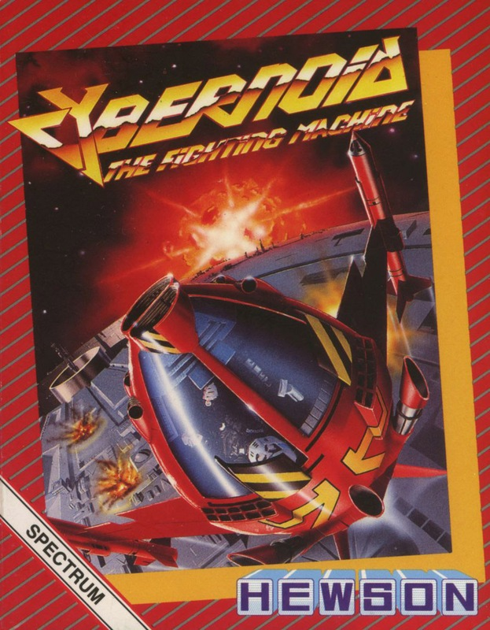
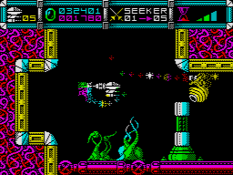
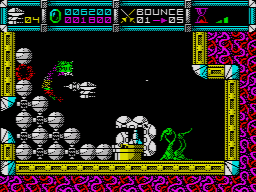
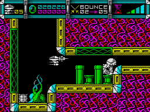

Cybernoid


{kind=link}

| Publisher: | Hewson |
| Price: | £7.99 Cassette, 14.99 Disk |
| Year: | 1988 |
| Source: | CRASH, Issue 51 |

Evil pirates have ransacked the Federation’s storage depots, stealing valuable minerals, jewels, ammunition, and the latest in battle weaponry. The player takes the part of the brave Cybernoid, picked to retrieve the valuable cargo and destroy the pirate hoard.

Apart from human adversaries, the Cybernoid also has to battle his way through the planetary defence system that the dastardly pirates have activated in order to stop the hapless hero from completing his mission. Add to that the time limit imposed on returning all the cargo for each level, and it can be seen why only the brave — or the foolhardy — volunteer for these tasks.
The Cybernoid isn’t entirely defenceless, though: apart from the standard lasers, his arsenal also consists of bombs, mines, shields (used to provide limited invincibility), bouncing bombs, and heat-seeking missiles. Needless to say that stocks of these items are limited, although collection of the yellow canisters occasionally dropped by pirate ships increases the currently selected weapons stock by one.

just blast everything in sight
Other items that may be collected include the Federation’s stolen booty, objects that alter the appearance of the player’s craft and extra external weaponry that can be used on the more difficult screens.
As the Cybernoid travels through the pirates’ flick-screen territory, he is hampered by their activated defence systems. These take the shape of gun emplacements, missile launchers and so on — tricky to pass, but easily eliminated with the extra weapons.
Once a level has been cleared and the cargo collected, the Cybernoid then heads for the level depot, where he is informed whether or not he has collected enough cargo to warrant being given a bonus. If not, one Cybernoid ship is lost, and the player is transported to the next level.
CRITICISM

machines?’
“Fantastic! Who needs 16-bit machines when Hewson and Raffaele Cecco can produce games like this on the 8-bit Spectrum. Cybernoid is perfect in every way that a computer game should be: it has excellent sound, excellent graphics and excellent colour. In fact I cannot find anything wrong with it at all! The animation is the best I’ve seen for a long, long time, and the way you can add equipment to your ship to make it stronger is great, too. The backgrounds are all well drawn, as are the sprites. Understandably there is some colour clash but this is bearable and even adds to the effectiveness of the explosions. There’s a good 128K tune constantly playing in the background and the special FX make it sound even better. As I’ve said before, it’s the little extra touches that make a game enjoyable to play, and Cybernoid has plenty of these: volcanoes, animated cannons, and scrolling borders all make the game pleasing to the eye. Well done Hewson: the ultimate Spectrum arcade game!”
NICK
“Cybernoid: the sensational mean fighting machine, collecting cargo and firing bombs — the idea isn’t exactly unusual but the slickness of its presentation certainly is. The graphics, reminiscent of Exolon and Starquake, are extremely colourful; the destruction of each Cybernoid ship is accompanied by an explosion so spectacular it’s almost worth losing a life to watch the effect! The nasties are numerous and have some engaging characteristics: I particularly liked the wriggly caterpillar that carries on squirming even after most of its segments have been blown away. Immediately playable, Cybernoid gets gradually more and more difficult. After a while, progress inevitably becomes a matter of sacrificing a life to find out how to negotiate new screens. The gameplay, complemented by the atmospheric music, grows very addictive. Calling Spectrum owners everywhere — this is one version of a well established theme that it would be a pity to miss.”
KATI
“An arcade game in your own home — you’d better believe it. Cybernoid is one of the most addictive, playable, attractive and downright unbelievable games you’re ever likely to meet on the Spectrum. All the points that people used to criticise on the Spectrum could never be levelled at Raffaele Cecco’s latest masterpiece. The graphics are astounding — fantastic use of colour and amazing detail. The (optionally) constant sound on the 128K complements the game superbly. Cybernoid sure is one helluva fighting machine — the weapons available are mean and monstrous, making the action really compulsive. Cybernoid defies all adjectives; it just has to be played to be believed — and once you do play it, you’ll never leave it. If only all Spectrum games were like this!”
PAUL
COMMENTS
| Joystick: | Cursor, Kempston, Sinclair |
| Graphics: | Cybernoid is so colourful and detailed you’d be forgiven for thinking it was an arcade version |
| Sound: | An amazing 128K in-game tune, as well as some impressive spot effects |
| Options: | Sound on/off |
| General rating: | The formula may be old, but everything else is new or improved. Raffaele Cecco’s best game to date — if only it were bigger! |
| Presentation: | 93% |
| Graphics: | 96% |
| Playability: | 95% |
| Addictive qualities: | 96% |
| Overall: | 96% |